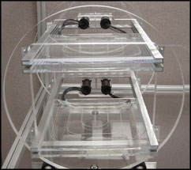

|

i-Lab Cosmic Ray Detector from Notre Dame |
i-Labs brings the research experience to informal settings such as science museums and public kiosks. To engage the general public in science, we envision using appealing museum exhibits to attract visitors' attentions and engage them in a short taste of exploration. Because we need to reconcile a visitor's short attention span at the museum with the asynchronous nature of large computations, we will, where necessary, use the Internet to follow up by inviting visitors to continue their scientific explorations through a virtual community from their home or school. Visitors will be able to learn about some of the big questions that challenge scientists in a particular field of research and participate in a virtual scientific collaboration. They will use virtual data tools and techniques to access, process and publish data, report their results as online posters, have online discussions about their work with peers, and then present posters and meet scientists at museums. In our ultimate vision, they will be engaged to make real contributions to a scientific investigation. Leading the effort to research an informal-education model, the Adler Planetarium is developing a cosmic ray i-Lab with support from QuarkNet and the Compact Muon Solenoid (CMS) experiment. |